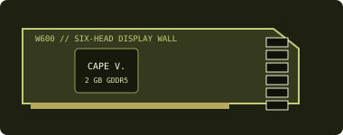

[ LEGACY WORKSTATION GRAPHICS ]
AMD FirePro W600 2 GB
A 2012 multi-display workstation board built around six Mini DisplayPort outputs and designed for video-wall and digital-signage installations.

Recorded specifications
| GPU | Cape Verde-class GCN; 640 stream processors. |
|---|---|
| Memory | 2 GB GDDR5, 128-bit memory interface. |
| Interface & power | PCI Express 3.0 x16; 75 W board-power class; slot-powered, no auxiliary PCIe power socket. |
| Outputs | Six Mini DisplayPort 1.2 connectors for multi-display installations; adapters and wall-control software must match the target display system. |
| Physical fit | Single-slot, full-height workstation board class. Measure the exact board and confirm bracket, cooler clearance, slot access and chassis airflow before fitting. |
Workstation & driver compatibility
Its six-output design targets professional display arrays rather than gaming. Validate PCIe support, total display topology, adapter type and wall-controller software against the planned installation.
- Obtain the archived AMD professional driver that explicitly lists W600 and the host OS; newer software may not include legacy FirePro support.
- Check the workstation/system vendor's graphics-card qualification and the display-wall application vendor's certification. Output count alone does not guarantee a supported topology.
- Check the exact board's thermal/power behavior, MiniDP connector condition and display synchronization needs before deployment.
Sources & further reading
- AMD — previous drivers and product supportManufacturer archive; select only a release that lists W600 and the required OS.
- AMD — Radeon Pro Software for Enterprise 21.Q2 release notesOfficial professional-driver release documentation and supported-product notes.
- TechPowerUp GPU Database — FirePro W600Independent specification cross-check; confirm physical details against the exact OEM board.
Card board revisions may differ. Validate the precise physical card, adapter chain and target software before relying on a multi-display installation.